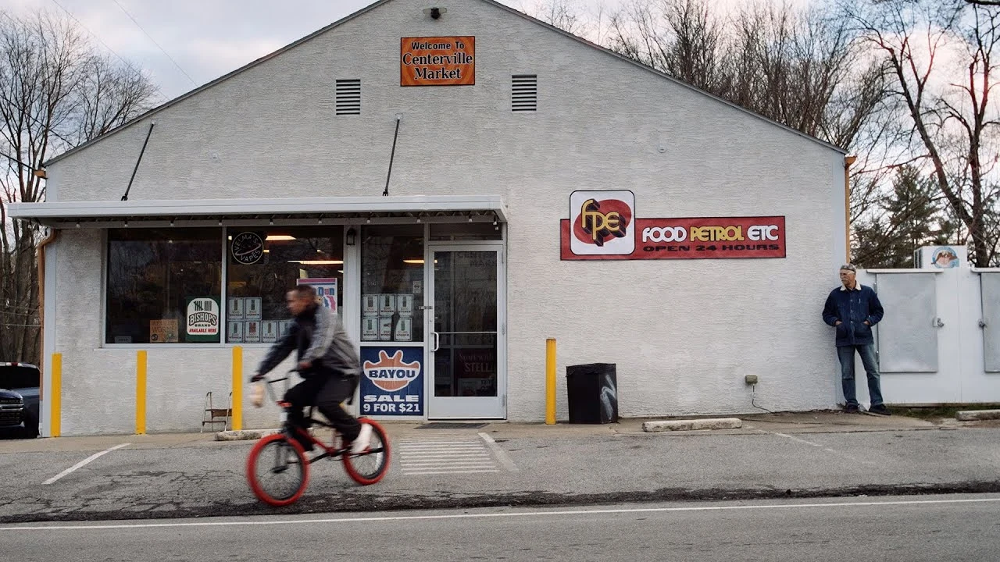

CLACNY by twenty one pilots
False advertizement?


Overcompensate
Clancy opens up with "Overcompensate', a roaring, synthy, drum heavy hip-hop fused banger. Heavily complimented by the amazing drumming from Josh Dun and good rapping and singing from Tyler Joseph himself. The track starts off with piano keys, which sounds strikingly similar to track 14 (Leave The City) off of the duo's 5th album "Trench", and is complimented by the track screaming "WELCOME BACK TO TRENCH" 2x pretty much saying this is a continuation of "Trench". The song then interpolates the track "Bandito", a song also on "Trench". The track then slows down and smoothly transitions into a hip-hop rap song. The production is also amazing on this one, if not the best on this whole album. The music video is also quite great, it depicts Clancy (played by Tyler) preaching to the citizens of the fictional city of DEMA, presumably about the Banditos, the bishops, and how to escape pass the walls of the city. The music ends with Clancy falling to floor, and the citizens take off his mask and it's revealed that Clancy was "seizing" another body, and that he's actually is on the southern shoreline of Trench.
8/10
Next Semester
"Next Semester" feels very out of place here, we transition from a synthy hip-hop rap song into a post-punk song. Despite this glaring issue, the track is, in my opinion, the best song on the album. The bass is heavy, Josh's drumming although simpler is amazing, and Tyler's pure emotion in his vocals is incredible. The track, and the music video, details a suicide attempt Tyler committed during his years in college, where he went out in the middle of road hoping to get hit by incoming traffic. Thankfully a man pulls over and tells him to get out of the road. The production (like Overcompensate) is also amazing but not as unique as track 1. Despite that though, I think the track is overall better because of the emotional weight.
9/10

Backslide
We transition to "Backslide", a slower hip-hop rap song? The rapping on this is alright, nothing unique or special but I enjoy it quite a lot. The track talks about Tyler's fears of backsliding into a depressive episode and bad habits, I often find myself thinking of this track while fearing the same. The track doesn't really have time to breathe however as it's only 3 minutes long and ends very soon. The music video depicts Tyler or Clancy? cycling around the streets of a suburb of the band's hometown of Columbus, Ohio? Ok?
7/10
Midwest Indigo
It's just the same problem again, sadly. This one opens with a BEAUTIFUL intro, I feel like I'm underwater when this intro is on, it's heavily complimented by Tyler's background vocals that are just amazing here (I wish the rest of the track was like that). We only go downhill from here. His vocals aren't mixed the worst... but they're not mixed very good either. They sound way abit too low in the mixing on this one and you can really tell too, as Josh's drumming sound much louder than the vocals. The music video is neat though, the intro is adorable.
5/10
Routines In The Night
This one is like Backslide's little sister. It too is a very chill hip-hop rap song, this is the last one though I promise. His rapping is alright. Singing is also fine, although he sounds like there's not much emotion here but assuming it's intentional due to the themes of the track, still not fond of it though. The themes of this track is Tyler dreams and thoughts wondering off into negatively, thoughts of depression and the unhealthy attempt to not fall asleep. The pre-chorus is pretty though. The track is inoffensive, but I can take or leave Tyler's background vocals on the last chorus. The music video depicts Tyler walking through a hallway and rapping while Josh is drumming in weird rooms.
6/10
Vignette
Yeah the album gets worse from here with very few exceptions. Tyler's rapping isn't good but nor is it downright terrible, it just exists I guess. His falsetto are usually beautiful but they're just very ugly here. I can leave his singing out though. The track is ambiguous but Tyler said he sees it as a song about addiction. Josh's drumming is good, music video is okay though.
5/10
The Craving (Jenna's Version)
The Craving is the love song of the album, and although out of place, it's very cute and I really appreciate the commitment and care Tyler puts into these. His vocals are great too, same with the music video which features short videos of Tyler and his wife Jenna over the years.
7/10
The Craving (Single Version)
This version is a cute track, but it's also veryyyyyy produced and feels like it was made because the boys needed another single (Lavish is right there though). Thankfully this version isn't included on the album, but I felt like it was still needed for this review. The music video is very funny though.
4/10
Lavish
Lavish, like most of this album, is an emotional flashbang. It's such a guilty pleasure though. I really love the production, the production on Tyler's vocals, and this weird dreamy sound. It sounds like I'm a universe of green, I imagine plants flourishing and growing in real time. It's such a pleasant sound. The song goes downhill like most of the album. Tyler thought it was a good idea to start rapping about NDA's and being bottomless, which is funny as all hell, it just feels very out of place on an album that's supposed to be a return to "Trench", which is a very serious album that deals with many mental health problems. Even if we leave Trench out of this, this album is very much a character study of Clancy, so why in all hell is there a goofy ass song here that isn't at all serious in tone or lyrically???
5.5
Navigating
Next Semester 2.0, but they fucked it up. The track sounds good overall, but the track feels very repetitive and it doesn't work all that well. Also, have you noticed that I haven't talked about the lore all that much since track 1? Yeah, that's because there really is none. There's no answers for any questions that have been raised for the past 5 years, and it took us 9 tracks in to get anymore of lore. The music video is what's lore heavy about this song. We continue off of Overcompensate where Clancy and Torchbearer (played by Josh) are on the southern shores of Trench and is met by fellow Banditos, they wander through the dense cold forest and Clancy is met by the real Torchbearer, the other one we have seen the whole time is an illusion possibly made up by Clancy? We have no real answer for this, it's never solved or answered, which leaves us with another question unresolved.
5/5
Snap Back
Snap Back is like an ugly mesh mash of "Car Radio" and "Backslide" lyrically. The production is fine, his rapping and singing are also fine. The track is extremely relatable and I really appreciate the meaning of this song. I often question why I am the way I am, and I struggle to explain why I am. It only makes up for so much though.
4/10
Oldies Station
It's a cute song, the production has some cool moments. I feel like snoring though...
3/10
At The Risk of Feeling Dumb
The lyrics are extremely appreciable, Tyler brings awareness to needing to check up on friends, because you never know if they're going through a rough time in their life and that can sometime lead to someone taking their own life. It's a lot of weight to carry, I just wish the song presented in a more respectable way. I'm not trying to say the boys are being rude with this song, not necessarily anyways, I just think it could've been approached much better tonally. The music video is neat. It's a snooze fest though.
3/10
Paladin Strait
We're finally at the end. This is the most lore heavy song of the album, and the music video is great in part of that. The music video depicts Clancy, Torchbearer, and the Banditos preparing for a fall out invasion of DEMA. They invade and Clancy manages to climb up on of the towers, climbing through he meets 7 of the 9 (now 8) bishops, knocking them down or killing them with some air power??? Okay? Nico is the only missing bishop, but he opens the door to reveal himself and goofily hovers of to Clancy, attempting to smear him. Clancy stares at Nico, and the music video ends with what sounds like a new instrumental for what is probably a different song. Pretty much saying "hey, this isn't the end. The track is beautiful, the synths are nice, and the rest of the track is alright. It eventually transitions into an interlude of birds and waves at a shore. We then hear a ukulele and Tyler singing, before being interrupted by Nico. The track is heavily damaged by the random interludes, which isn't even featured in the music video, so what's the point of it???
6/10
Overall
Clancy is a disjointed mess, with a messy track list that feels more like a mixtape rather than an LP (long play). The genres and tones heavily clash with each other and just doesn't feel right at all. Josh's drumming, the relatability, and the instrumentals truly carries this one for me. Tyler delivers his worst performance ever, by far. Tyler is an amazing singer and I truly question what went wrong with this record. The album fails to deliver on the "WELCOME BACK TO TRENCH" intro featured in Overcompensate. Tyler made a promise to a fan that this record will answer all questions, and that everything makes sense. It was marketed as the last album of the lore, and it's clear that it's a false advertisement. I hope there's a follow up to this album, whether a single, an EP (extended play), or an LP (long play). Whatever repairs at least some of the damages Clancy has made.
I love this band, but this isn't it. At least Scaled and Icy was charming.
5/10